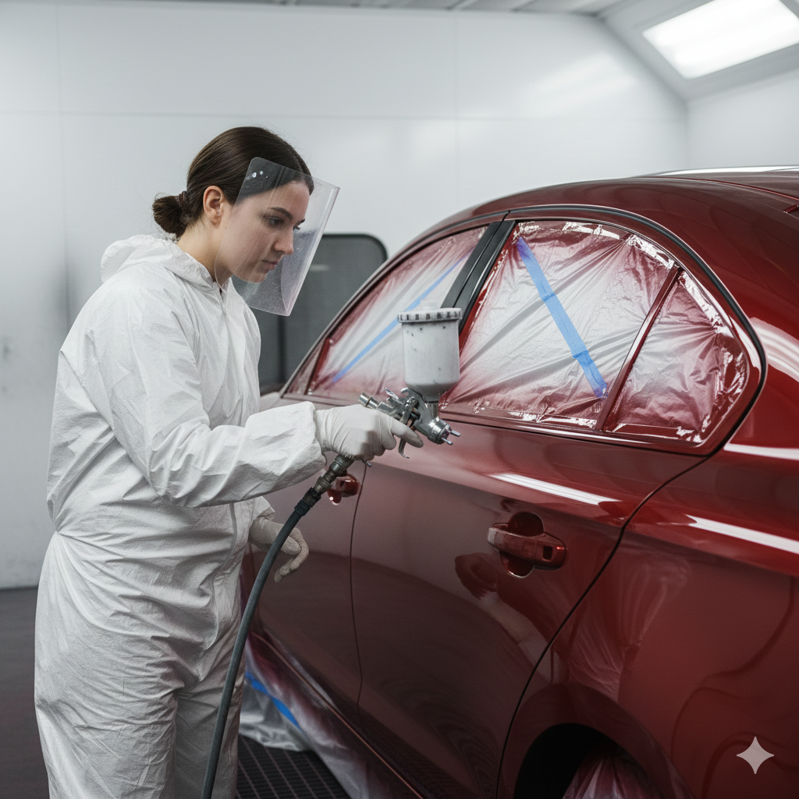

Introduction
If you are searching for professional car painting Doha services, you already know that a vehicle's finish does far more than look good in the parking lot at Villaggio or The Pearl. Paint is the first line of defence against Qatar's relentless sun, airborne sand, and the humidity swings that follow coastal heat. When clear coat fails, colour fades, or accident damage leaves panels mismatched, the wrong repair can cost you twice — once for a poor respray and again when peeling or orange peel forces a redo. At Dohar Car Repair, we deliver factory-quality auto paint Qatar drivers trust: precise colour matching, proper primer/base/clear systems, and prep work that survives Gulf summers.
This complete guide explains why car body paint Doha matters more than in cooler climates, what causes UV fading and oxidised paint locally, how to spot when your finish is failing, the difference between spot repair and full respray, how professionals apply and cure paint in Qatar heat, realistic costs in QAR, and why thousands of motorists choose our workshop for everything from door dings to full accident restoration. Whether you drive a daily sedan, a luxury SUV, or a car recovering from a collision, the principles below will help you get a finish that lasts.

Why This Service Matters in Qatar
Automotive paint is a engineered system — not a cosmetic coat. Modern finishes use multiple layers: electrocoat primer, surfacer, base colour, and a UV-resistant clear coat that gives depth and gloss. In Qatar, that system faces stress most European or North American owners never encounter. Months of direct sunlight above 45°C, fine sand that acts like airborne sandpaper, and parking on unshaded asphalt accelerate clear coat breakdown. Once the clear layer thins or crazes, moisture and salt reach the base colour. Oxidised paint follows: chalky surfaces, dull panels, and white haze that no amount of polishing permanently fixes.
Neglecting paint repair also hurts resale value. Buyers in Dohar's used-car market inspect panel gaps, colour consistency, and overspray lines carefully. Mismatched doors, cheap touch-ups, or visible filler through thin paint signal poor accident history. Related structural work often precedes painting — dents must be corrected before any spray gun touches metal. That is why we coordinate closely with our body denting in Doha team so panels are straight, gaps even, and the surface ready for lasting adhesion.
- UV protection: Intact clear coat blocks the sun that bleaches pigment and embrittles resin binders
- Corrosion barrier: Paint seals bare metal against humidity, road salt residue, and stone-chip exposure
- Resale confidence: Even, factory-matched colour tells buyers the car was cared for — or properly restored after damage
- Accident recovery: Quality respray after collision repair returns a car to roadworthy appearance and value
- Personal pride: A glossy, uniform finish reflects how you maintain every part of the vehicle
Qatar Sun Reality
UV intensity in the Gulf is among the highest globally. Cars parked outdoors in West Bay, Industrial Area, or open mall lots can show measurable clear coat degradation within three to five years without protection. In Doha, paint care is climate defence — not vanity.
Common Causes of Paint Damage in Doha
Understanding what destroys automotive finish helps you choose the right repair level. These are the failure modes we diagnose every week at our Doha workshop:
UV Fading and Clear Coat Breakdown
Ultraviolet radiation breaks down the polymer chains in clear coat. Early signs include loss of gloss on horizontal surfaces — bonnet, roof, and boot — where sun exposure is strongest. As damage progresses, the clear layer thins until you see base colour directly. Dark colours (black, deep blue, red) often show fading first because heat absorption accelerates chemical breakdown. Once UV fading passes a certain point, polishing removes too much material and exposes bare colour — only respray restores depth.
Sandblasting Effect on Clear Coat
Qatar's frequent shamal winds carry fine sand and dust. At highway speeds or in open car parks, particles strike the finish at velocity. Over time this sandblasting effect micro-scratches clear coat, creating a hazy, swirl-filled surface. Combined with automatic car washes using harsh brushes, the finish dulls faster than owners expect. Regular gentle washing helps, but once the clear coat is physically worn through in spots, localised refinishing or panel repaint becomes necessary.
Oxidised Paint and Chalky Surfaces
Oxidation occurs when UV and heat degrade the resin that binds pigment particles. Paint looks flat, powdery, or whitish — especially on older cars without ceramic maintenance. Light oxidation sometimes responds to compound and polish; heavy oxidation means the clear and much of the base are compromised. Attempting to "buff it back" on severely oxidised panels often leaves thin, uneven colour that fails within months in Qatar heat.
Accidents, Door Dings, and Stone Chips
Impact damage breaks the paint film down to metal. Unsealed chips rust quickly in humid coastal air. After minor collisions, panels may need body denting and panel alignment before paint. Larger accident cars require structural assessment, parts replacement, and multi-panel colour matching — work that must be sequenced correctly so the final respray looks factory original.
Improper Previous Repairs
Cheap resprays skip proper prep, use incompatible products, or apply clear coat too thin. Within a year, these repairs peel at edges, show solvent pop, or fade differently from surrounding factory panels. Fixing someone else's shortcut often costs more than doing it right the first time — but it is still cheaper than leaving mismatched paint on a car you plan to keep or sell.
Windshield and Trim Masking Failures
When adjacent glass or rubber seals are not properly protected during respray, overspray lands on windshields and trim — a common complaint after low-quality jobs. Professional shops mask glass, remove handles and badges where needed, and use appropriate tape and paper so auto paint Qatar work stays confined to body panels. If your windshield already has overspray damage from a prior repair, we can advise on safe removal or replacement coordination before painting begins.

Warning Signs You Need Car Painting
Do not wait until rust spreads or panels look completely mismatched. Watch for these practical signals that your finish needs professional attention:
- Clear coat peeling or flaking: Edges lifting on bonnet, roof rails, or mirror caps — water will follow
- Permanent dullness after washing: No amount of wax restores gloss; oxidation has set in
- Visible colour difference between panels: One door or fender looks newer, darker, or more orange than the rest
- Deep scratches to bare metal: Primer or steel visible — rust risk within weeks in Qatar humidity
- Post-accident damage: Crumpled panels, scraped bumpers, or paint transfer from another vehicle
- Rust bubbles or blistering: Paint lifting from corrosion underneath — needs strip, repair, and respray
- Faded horizontal surfaces: Roof and bonnet noticeably lighter than vertical panels
- Failed previous touch-up: Brush marks, shrinking filler, or paint that cracked around repaired areas
If structural damage accompanies cosmetic issues — bent rails, suspension misalignment, or airbag deployment — schedule full car repair service in Doha before committing to paint. Painting over uncorrected damage wastes money and hides safety problems.
How Professionals Fix It: The Car Painting Process
A proper car respray Doha job is far more than spraying colour from a can. Here is the process our technicians follow so every panel receives durable, matched finish:
-
Assessment, colour code lookup, and repair scope
We inspect damage depth, identify your factory colour code (door jamb, VIN plate, or manufacturer database), and decide spot repair versus full panel or full vehicle respray. Accident cars receive a written plan covering dent repair, parts, and paint blend areas.
-
Surface preparation and body work
Dents are pulled or filled only where necessary, then shaped and sanded. Old failing paint is feather-edged. Rust is removed to clean metal. Prep quality determines adhesion — shortcuts here cause peeling within months. Panels destined for paint are cleaned of wax, silicone, and road film.
-
Masking, primer, and surfacer application
Adjacent panels, glass, lights, and trim are masked precisely. Epoxy or corrosion primer seals bare metal. Surfacer fills minor imperfections and creates a uniform surface for base coat. Each layer is sanded to the correct grit before the next — this is where cheap shops cut corners.
-
Colour matching and base coat application
Using spectrophotometer tools and tinting expertise, we match your factory shade — critical for metallic and pearl finishes where colour matching Qatar conditions (sun angle, flake orientation) affect perception. Base colour is applied in controlled coats to achieve even coverage and correct hue.
-
Clear coat application and flash time
UV-resistant clear coat adds depth, gloss, and protection. Application thickness and technique matter: too thin and UV penetrates quickly; too heavy and runs or solvent pop appear. Flash times between coats are adjusted for booth temperature and humidity.
-
Curing in heat and humidity, inspection, and delivery
Paint must cure properly — Qatar's ambient heat helps in some stages but high humidity can slow solvent release if the booth is not controlled. We allow adequate cure before assembly, buff minor imperfections if needed, reinstall trim, and verify colour match in natural daylight before handover.
"In Qatar, paint fails when prep fails. We spend more time on sanding, masking, and colour matching than on the spray pass itself — because that is what separates a finish that lasts five years from one that peels in five months."
Spot Repair vs Full Paint: Which Do You Need?
Not every scratch requires repainting the entire car. Choosing the right scope saves money while protecting appearance:
Spot and Panel Repair
Localised damage — a door ding, bumper scuff, or single-panel accident mark — suits spot or panel respray when surrounding factory paint is healthy. Technicians blend colour into adjacent panels so the transition is invisible. This works best when the factory colour is available and the damage area is limited. Car body paint Doha spot jobs typically take one to three days depending on prep and cure time.
Multi-Panel and Full Respray
When UV fading affects the whole car, clear coat failure is widespread, or accident damage spans multiple panels, a full or partial respray makes sense. Repainting only one faded panel on a sun-damaged bonnet leaves obvious mismatch. Full resprays cost more but deliver uniform gloss and colour — essential before selling or for owners who want showroom presentation. Accident cars with structural repairs often need multi-panel work coordinated with body denting and mechanical checks.
When Touch-Up Is Enough
Stone chips smaller than a fingernail, without rust, sometimes need touch-up pen or airbrush spot repair only — not full panel paint. We advise honestly when touch-up suffices versus when proper refinishing is the durable choice.
Colour Matching Tip
Metallic and tri-coat pearl finishes require spray-out test panels and often slight tint adjustment. Factory colour codes are a starting point — not a guarantee. Our colour matching Qatar process accounts for age-related fading so new paint does not look "too fresh" beside older panels.
Maintenance Tips to Protect Your Paint in Qatar
Extend the life of fresh or factory paint between workshop visits with these habits:
- Wash regularly but gently: Remove sand before it scratches; use microfiber mitts and pH-neutral shampoo
- Seek shade when parking: Garages, covered parking, or shade structures dramatically slow UV fading
- Apply quality wax or ceramic coating: Adds sacrificial UV and sand protection on top of clear coat
- Fix chips promptly: Touch bare metal immediately to prevent rust in humid Doha air
- Avoid harsh automatic brush washes: They accelerate clear coat micro-scratching
- Use sunshades on windscreen: Reduces cabin heat and protects dashboard — indirect benefit to overall vehicle care
- Inspect after shamal dust events: Rinse sand before wiping; dry dust acts like sandpaper on paint
- Schedule annual inspection: Early clear coat haze is cheaper to correct than full panel respray
Pair paint care with overall vehicle health. Learn more about our standards on the about us page, and explore related guides on our blog — including brake repair and AC service for complete seasonal maintenance.
Common Mistakes Drivers and Shops Make
These errors cost Qatar car owners more than a professional respray ever would:
- Painting over rust or loose old paint: Peeling returns within months; corrosion spreads underneath
- Skipping primer on bare metal: Direct base coat on steel fails adhesion and rusts through
- Using mismatched or untested colour: Obvious panel differences destroy resale value
- Rushing cure time in humid conditions: Soft paint, fingerprints, and solvent pop result
- DIY rattle-can repairs on large areas: Uneven texture and no clear coat UV protection
- Ignoring dent repair before paint: Filler telegraphs through thin coats; gaps stay uneven
- Choosing price over prep quality: The cheapest quote often skips sanding steps and proper masking
- Delaying chip repair until rust forms: Rust removal adds labour and may require panel replacement

Car Painting Cost in Qatar (QAR)
Prices vary by damage extent, panel count, colour type (solid, metallic, pearl), prep work required, and whether accident structural repair is included. Typical Doha market ranges:
- Minor touch-up / chip repair: 50–200 QAR per area
- Single panel spot repair (door, fender, bumper cover): 400–1,200 QAR
- Multi-panel respray (2–4 panels with blend): 1,500–4,000 QAR
- Full vehicle respray (sedan, standard colour): 4,000–8,000 QAR
- Full respray (SUV / large vehicle or pearl finish): 7,000–14,000+ QAR
- Accident restoration (paint + body work combined): 2,000–15,000+ QAR depending on severity
- Clear coat renewal (single panel, where suitable): 350–900 QAR
We quote transparently after inspection — not from vague phone guesses. If accident damage makes repair uneconomical, some owners explore selling an accident car in Qatar while others invest in full restoration to keep a valued vehicle. We help you understand both paths honestly.
Value Over Cheap Resprays
The lowest advertised car respray Doha price often excludes proper rust treatment, colour matching, and adequate clear coat thickness. Ask what prep steps, paint brand, and warranty are included — then compare properly.
Why Choose Dohar Car Repair
Drivers across Doha choose Dohar Car Repair for painting and refinishing because we combine technical skill with honest communication:
- 15+ years of local experience understanding Qatar UV, sand exposure, and humidity effects on automotive finish
- All makes and models — Japanese, Korean, European, American, and Gulf-spec vehicles
- Advanced colour matching Qatar with spectrophotometer support for metallics and pearls
- Integrated body and paint workflow — dent repair, panel replacement, and respray under one roof
- Proper primer/base/clear systems suited to Gulf climate — not single-stage shortcuts on modern cars
- Controlled curing awareness for heat and humidity so paint hardens correctly before delivery
- Transparent pricing in QAR before work starts — detailed scope, no surprise extras
- Accident car expertise from assessment through final polish and customer handover
- Convenient contact via phone, WhatsApp, or our contact page
Our location serves customers from central Doha and surrounding areas who want dependable turnaround and finish quality without dealership mark-ups for body and paint work.
FAQ
How long does car painting take in Doha?
Single panel spot repairs often take two to four days including prep, paint, and cure time. Multi-panel accident work may require one to two weeks depending on parts availability, structural repair, and the number of coats needed. Full vehicle resprays typically need five to ten days for proper prep, application, and curing. We provide a realistic timeline after inspection — rushing cure in Qatar humidity causes long-term defects.
Can you match my exact factory colour?
Yes — for virtually all production colours. We use your factory colour code plus spray-out test panels and spectrophotometer readings for metallics and pearls. Slightly faded older cars may need blend techniques so new paint transitions invisibly into existing panels. Colour matching Qatar finishes require experience with local light conditions; our technicians account for this during approval.
Is it better to respray one panel or the whole car?
If only one panel is damaged and the rest of the factory finish is in good condition, panel repair with blending is usually sufficient and more economical. If the car has widespread UV fading, clear coat failure, or multiple repaired areas from past accidents, partial or full respray delivers better uniformity. We recommend the smallest scope that achieves a lasting, invisible result — not the largest bill.
How does Qatar heat affect paint curing?
Heat accelerates solvent evaporation, which helps in controlled booth environments but can cause problems if paint is applied too thick or if humidity is high. Proper flash times between coats and adequate cure before handling are essential. We adjust process for seasonal conditions so your clear coat achieves full hardness — not soft, mark-prone finish that fails in the first hot week.
Do you handle accident cars and insurance-related repairs?
Yes. Accident cars often need combined body denting, parts replacement, mechanical inspection, and multi-panel painting. We document damage, provide detailed estimates, and restore appearance to pre-accident standards where economically sensible. For severely damaged vehicles, we also advise on repair-versus-sell decisions and related services such as accident car purchase options.
How can I protect my paint after a respray?
Wait for the recommended cure period before washing or waxing — we provide specific guidance at handover. After that, regular gentle washing, shade parking, prompt chip touch-up, and periodic wax or ceramic coating dramatically extend life. Avoid brush automatic washes for at least the first month and ideally long term. Treat fresh paint gently for the first few weeks while solvents fully escape.
Conclusion
Professional car painting Doha is essential maintenance in a climate that attacks clear coat with UV, sand, and heat every single day. From early UV fading and oxidised paint to accident restoration and full respray, the difference between a finish that lasts and one that peels comes down to prep quality, colour matching, proper primer/base/clear application, and patient curing. Whether you need a single panel blended after a door ding or complete refinishing on an accident car, expert auto paint Qatar service protects both appearance and value.
Ready to restore your car's finish? Contact Dohar Car Repair for professional car body paint, colour matching, and full refinishing. Call 0097472223959, message us on WhatsApp, or visit our contact page to schedule an inspection and quote. Drive with confidence — start with the paint job your car deserves.